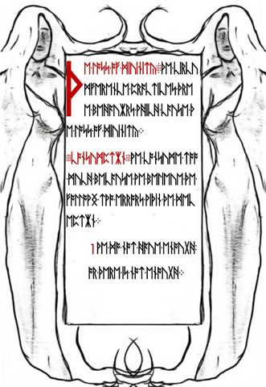
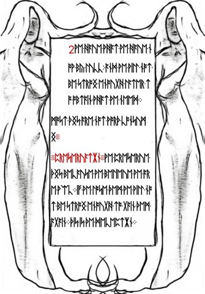

Rubrication: red lettering, numbers, and boundaries
Compare different uses of red in the manuscript and record color, text, and proposed cipher boundaries separately.
On this page
Rubrication is the use of red or otherwise distinguished lettering to help organize a manuscript. In Liber Primus, red appears in headings, larger opening marks, punctuation-like clusters, and decimal numbers. Those uses need to be recorded separately: a red number in a panel is not the same kind of feature as a red heading.
What does the term mean?
The Getty’s manuscript terminology entry includes headings, initials, titles, and other distinguished text used to guide readers through a page. Its Vidal Mayor lesson shows a red heading introducing a book within a larger work. This historical terminology helps describe a visual practice; it does not date Liber Primus or identify its maker.
A heading is identified by its position and function, while red lettering describes its appearance. A decoded title may establish a heading’s meaning. Color alone does not. For an unsolved passage, report the visible color and rune sequence before assigning a title.
The warning’s red closing phrase
Red lettering is not confined to headings. On LP1-01, it begins partway through the penultimate text row and continues on the last row, followed by a red cluster. The known reading joins the split word across those rows to give FOR ALL IS SACRED.

[580, 2160, 1220, 400]. Complete page · Original JPEG.The placement visually distinguishes the conclusion, but a description of color is not proof that the phrase needs a different cipher. The complete warning reproduction uses its documented Atbash reading. For the relation between the warning’s invitation to test and its demand to preserve the book, see questioning a book while preserving it.
Three different uses of red


These previews are cropped. Open the reader to inspect each complete original. They illustrate different roles for color, not an exhaustive inventory of every red mark in the book.
LP2-15 is especially useful because the rune heading and number panel occur on the same page. The panel guide records all sixteen numbers and the heading. The red 3299 is an observable distinction; interpreting it as a key, ordinal, or instruction requires an additional rule. Likewise, a transliterated red rune group is not automatically decoded English.
LP2-57 provides a known-reading comparison. Its opening is read as PARABLE in the documented direct reading. That interpretation is supported by the recorded reading, not inferred from red alone. The prime-sum guide separately distinguishes the heading from three body segments and explains how including it changes the total.
For a closer comparison of one feature type, see the red closing clusters on LP2-22, LP2-32, and LP2-55. The enlarged original-image regions keep their color and orientation intact.
Red 1 and 2 across LP1-10–11
Red decimal labels also appear in the known readings. A red 1 introduces the lower passage on LP1-10; a red 2 opens LP1-11. The list crosses the page boundary.


The known reading identifies these as the two errors discussed under consumption: perceived insufficiency, then the belief that present resources came by luck and cannot be obtained again. This gives the numbering an established textual context. It is different from assigning a function to a red mark on an unsolved page using its color alone.
The page-by-page argument map follows the continuation into preservation and adherence. The red 1–5 labels on LP2-36–38 offer a separate, unsolved comparison; the known LP1 list does not establish what those later numbered blocks mean.
Can color mark a cipher boundary?
It can motivate a boundary hypothesis. A red heading followed by black body text gives a visible division worth checking. But several possibilities remain: the heading and body might share one transformation, use different transformations, or treat the heading as unencrypted. The image does not choose among them.
For a repeating-key proposal, even “skip the heading” is incomplete. Does the skipped heading consume key positions? Does the key restart at the next block or continue across it? The interruptions guide explains why the same visible boundary can lead to different outputs under different advancement rules.
The same issue affects measurements. The published whole-page IoC baseline includes archived rune headings. A body-only measurement would be a different input, not a corrected version of the baseline. Specify which rune positions were removed so another researcher can reproduce the comparison.
How to document a red feature
- Identify the release and page, then open the original JPEG from its download record. Keep the image checksum with the observation.
- Describe the feature’s location and type: heading, individual rune, number, dot cluster, or drawing. Do not merge unlike features into one “red text” stream without saying so.
- Record the exact glyph sequence or decimal digits and its boundaries. If a crop is used, retain the full-image coordinates; the image-region guide explains that workflow.
- Keep visible appearance separate from interpretation. “3299 is red” and “3299 selects a prime” are different claims.
- For an extraction by pixel color, publish the thresholds, treatment of mixed edge pixels, and resulting mask. Check the mask against the original before treating it as a transcription.
A plain rune text file need not preserve color or layout. Do not assume that a punctuation character in an archive identifies a red mark. Compare the transcription conventions and original image, especially when proposing to extract only red material.
Sources and related subjects
Terminology: the Getty sources linked above. Examples: original page records for LP2-15, LP2-36, and LP2-57, with the LP2-15 observations and LP2-57 known reading already recorded in this wiki. Continue with dots and punctuation, the cuneiform-like page group, or the illustrated page index.
Color can also help locate writing outside the main text block. On LP1-04, the small red instruction beneath the main passage is easily lost at thumbnail size. The enlarged original-image detail keeps that line visible alongside its known reading.
Manuscript pages discussed
LP2-15 · LP2-36 · LP2-57 · LP1-10 · LP1-11 · LP1-01